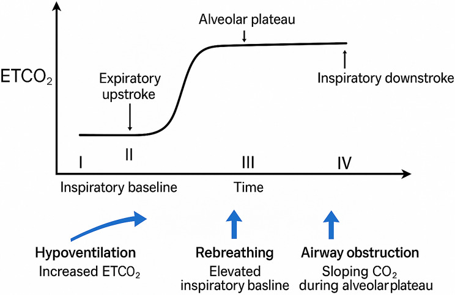
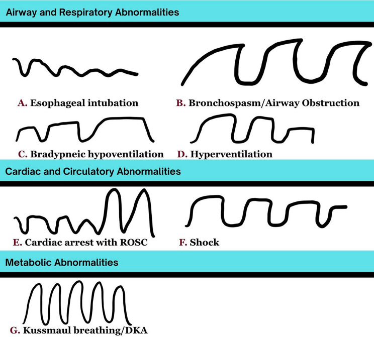

3119 — Giảm thông khí trung ương do opioid ở trẻ sau mổ: đọc capnogram trước khi đọc SpO₂
Tags: pattern:giam-thong-khi-trung-uong pattern:giam-thong-khi-khi-thuc pattern:phe-quan-binh-thuong vung:than-nao vung:duong-tho vung:phoi protocol:capnography protocol:PSG protocol:XR-nguc score:AASM-hypoventilation score:RASS
Mức chắc chắn (certainty): tổng hợp y văn (literature synthesis) — ghép tổng quan capnography trong cấp cứu nhi (Rath S và cs., Int J Emerg Med 2026, PMC12797510), tổng quan hệ thống về ngưỡng SpO₂ trong ức chế hô hấp do opioid (Manes A và cs., West J Emerg Med 2026, PMC13436640), tổng quan 6 nghiên cứu về ức chế hô hấp do opioid ở trẻ bệnh nặng (Mauritz MD và cs., Children (Basel) 2020, PMC7767476), bài điểm về codeine/tramadol chu phẫu nhi (Maisat W, Yuki K., Transl Perioper Pain Med 2025, PMC12007907), hướng dẫn an thần nhi Hàn Quốc 2026 (Lee HM và cs., Anesth Pain Med 2026, PMC13444186) và hướng dẫn hồi sinh nhi Hàn Quốc 2025 (Kim DK và cs., Clin Exp Emerg Med 2026, PMC13277418). Không có ca do nhóm tự chụp.
Câu hỏi thực hành: bé trai 3 tuổi, mổ cắt amidan – nạo VA, đêm đầu sau mổ ngủ im, không co kéo, không rít, SpO₂ 99% vì đang thở oxy 2 L/phút, nhịp thở 10 lần/phút. Điều dưỡng thấy "cháu ngủ ngoan". Bạn nghĩ ổn, tắc nghẽn, hay giảm thông khí trung ương do opioid — và dấu hiệu nào xuất hiện trước SpO₂?
1. Tổng quan bệnh học – cơ chế hình ảnh: vì sao trẻ "ngủ ngoan" lại là dấu hiệu xấu nhất
- Bản chất: opioid gắn thụ thể µ ở phức hợp preBötzinger/Kölliker–Fuse và nhân parabrachial — nơi tạo nhịp thở và cảm nhận CO₂ — làm giảm độ dốc đáp ứng với CO₂ và giảm tần số thở, đồng thời giảm trương lực cơ mở hầu. Kết quả: giảm thông khí phế nang (CO₂ tăng) trước, thiếu oxy sau.
- Vì sao SpO₂ là chỉ số đến muộn: đường cong phân ly hemoglobin hình chữ S — SpO₂ còn ~90% khi PaO₂ chỉ còn ~60 mmHg. Nghĩa là khi SpO₂ bắt đầu tụt, trẻ đã giảm thông khí từ lâu. Thêm vào đó, oxy bổ sung giữ SpO₂ cao dù thông khí rất kém (hiệu ứng "che" của oxy), nên SpO₂ 99% không loại trừ gì.
- Vì sao capnogram phát hiện sớm hơn: CO₂ đo được từng nhịp, tăng song song với giảm thông khí; capnography phát hiện giảm thông khí sớm hơn oximetry vài phút. Trong một tổng quan nhi, capnography phát hiện toàn bộ cơn ngưng thở, trong khi hơn một nửa số cơn bị bỏ sót bởi theo dõi thường quy (theo tổng quan PMC12797510 dẫn Langhan và cs.).
- Vì sao trẻ nhỏ nguy hiểm hơn người lớn: dự trữ oxy thấp, tiêu thụ O₂ cao, đường thở mềm dễ sụp, và không tự báo được triệu chứng. Vì vậy "ngủ im, thở chậm, không khó thở" ở trẻ sau mổ opioid là hình thái điển hình của ức chế hô hấp, không phải dấu hiệu an toàn.
- Ngưỡng và số liệu phải thuộc:
| Biến số | Số liệu | Nguồn |
|---|---|---|
| Ngưỡng SpO₂ dùng để định nghĩa ức chế hô hấp do opioid (OIRD) | 85–95%, trung vị 92% (IQR 90–95) | PMC13436640 |
| SpO₂ lúc sự cố trong 3 nghiên cứu có OIRD | tụt tới trung vị 80% | PMC13436640 |
| Tỷ lệ biến cố trong 16 nghiên cứu (N = 12.887) | 14–40%, gộp ~18% | PMC13436640 |
| OIRD ở trẻ bệnh nặng dùng opioid (6 nghiên cứu) | 0,13–4,6% | PMC7767476 |
| Biến cố codeine ở trẻ (FDA, 1969–2012) | 13 ca, 10 tử vong, 3 ức chế hô hấp nặng; 8/13 sau cắt amidan/VA | PMC12007907 |
| CYP2D6 | 10/100 người da trắng là chuyển hóa kém, 29/100 người Ethiopia là chuyển hóa cực nhanh; ức chế hô hấp tới 41% nếu không tính kiểu gen | PMC12732015 |
| Naloxone | 1–5 µg/kg chuẩn độ cho ức chế hô hấp do opioid điều trị; < 5 tuổi hoặc < 20 kg: 0,1 mg/kg; ≥ 5 tuổi hoặc ≥ 20 kg: 2 mg | PMC13277418 |
2. Mẫu hình + chẩn đoán phân biệt theo vị trí (gamut)
- Mẫu hình cốt lõi: trẻ hậu phẫu, giảm tần số thở + giảm biên độ, không co kéo, không rít, thường ngủ sâu khó đánh thức; EtCO₂ tăng trước khi SpO₂ tụt.
- Gamut theo cơ chế (đọc theo 4 tầng):
- Trung tâm: opioid (kể cả PCA, morphin tủy sống), benzodiazepine, propofol tồn lưu, clonidin/dexmedetomidine; CHANTER (phù tiểu não do opioid — bài 3101).
- Tắc nghẽn đường thở trên: OSA chưa chẩn đoán, phù sau cắt amidan/VA, hẹp mũi, lưỡi lớn (Down), tụ máu cổ.
- Thần kinh – cơ: giãn cơ tồn lưu (TOF ratio < 0,9), bệnh cơ/thần kinh nền, lan thuốc tê tủy sống lên cao.
- Nhu mô – màng phổi: xẹp phổi, hít sặc, viêm phổi, phù phổi do áp lực âm, tràn khí.
- Phân biệt theo "thì" sau mổ: ngay tại phòng hồi tỉnh (giãn cơ tồn lưu, tắc nghẽn) → 1–6 giờ (opioid đỉnh, chảy máu) → 6–24 giờ (codeine chuyển hóa chậm, PCA tích lũy, phù amidan) → sau 24 giờ (nhiễm trùng, hít sặc, CHANTER).
3. Bảng so sánh phân biệt (ma trận đối chiếu)
| Thực thể (entity) | Hình ảnh / thăm dò điển hình | Chốt vào (rule-in) | Chốt loại (rule-out) | Gợi ý xác nhận |
|---|---|---|---|---|
| Giảm thông khí trung ương do opioid (OIRD) | Capnogram: nhịp thưa, biên độ thấp, EtCO₂ tăng, không có dạng dẹt của tắc nghẽn | Thở chậm nông + EtCO₂ tăng + đồng tử co + đáp ứng naloxone | Co kéo/rít/ngáy rõ (gợi ý tắc nghẽn) hoặc TOF < 0,9 | Capnography + đáp ứng naloxone |
| Giãn cơ tồn lưu | TOF: tỷ lệ T4/T1 < 0,9; không có EtCO₂ tăng đơn thuần | TOF < 0,9 + yếu cơ toàn thân + không đáp ứng naloxone | TOF ≥ 0,9 và capnogram kiểu giảm thông khí trung ương | TOF + đáp ứng thuốc giãi giãn cơ |
| Tắc nghẽn đường thở trên | Capnogram: dạng dẹt/không có pha cao nguyên, biên độ giảm nhưng nhịp có thể nhanh; ngáy, co kéo | Ngáy/co kéo + dạng dẹt + cải thiện khi mở đường thở | Capnogram vuông vắn, EtCO₂ tăng đều, không co kéo | Nghiệm pháp mở đường thở + nội soi khi ngủ |
| CHANTER (phù tiểu não do opioid) | MRI: phù tiểu não hai bên, có thể phù thân não; khởi phát chậm | Hôn mê kéo dài sau opioid + MRI có phù tiểu não | Tỉnh nhanh sau naloxone, MRI bình thường | MRI sọ (bài 3101) |
| Xẹp phổi / hít sặc | X-quang: mờ kèm mất thể tích (khe/trung thất lệch), đông đặc thùy dưới | Mờ + mất thể tích + ran/giảm thông khí khí vào | X-quang bình thường và capnogram đơn thuần giảm thông khí | X-quang ngực; CT khi không rõ |
| Tràn khí màng phổi | X-quang: màng phổi tách, không có mạch máu ngoại vi; siêu âm: mất trượt màng phổi | Mất trượt màng phổi + tăng áp lực đường thở | Trượt màng phổi còn, X-quang không có đường màng phổi | Siêu âm phổi đầu giường |

Cấu trúc một capnogram bình thường: pha I (khoảng chết), II (lên dốc thì thở ra), III (cao nguyên phế nang = EtCO₂), IV (hít vào). Mũi tên xanh: giảm thông khí làm tăng EtCO₂, thở lại (rebreathing) làm nâng đường nền hít vào, tắc nghẽn làm dốc pha III. Nguồn: Rath S và cs., Int J Emerg Med 2026 (PMC12797510), Fig. 1 — CC BY-NC-ND 4.0, nguyên bản, không cắt/ghép.4. Protocol chụp/theo dõi + hệ phân độ và ngưỡng xử trí
- Theo dõi tối thiểu ở trẻ dùng opioid sau mổ: SpO₂ liên tục + nhịp thở + thang an thần (RASS/pediatric sedation scale); capnography khi có nguy cơ cao hoặc khi an thần trung bình/sâu. Hướng dẫn an thần nhi 2026: EtCO₂ được khuyến cáo mạnh ở an thần trung bình và bắt buộc ở an thần sâu (PMC13444186).
- Ngưỡng báo động thực hành: EtCO₂ > 50 mmHg, hoặc tăng > 10 mmHg so với nền, hoặc nhịp thở thấp hơn theo tuổi kèm biên độ giảm → đánh thức, mở đường thở, giảm/ngừng opioid, đo khí máu nếu cần.
- Naloxone — dùng liều chuẩn độ, không "đảo ngược toàn bộ": khởi đầu 1–5 µg/kg cho ức chế hô hấp do opioid điều trị; nếu cần đảo ngược đầy đủ: < 5 tuổi hoặc < 20 kg: 0,1 mg/kg, ≥ 5 tuổi hoặc ≥ 20 kg: 2 mg (PMC13277418). Đảo ngược quá tay gây đau dữ dội, tăng huyết áp, phù phổi — vì vậy luôn chuẩn độ.
- Nhóm nguy cơ cao cần theo dõi 24 giờ có capnography: OSA/Down, béo phì, < 6 tháng tuổi (nguy cơ ngưng thở sau mổ), bệnh thần kinh–cơ, opioid-naive dùng liều cao, PCA, dùng kèm benzodiazepine, và chuyển hóa cực nhanh CYP2D6.
- Codeine và tramadol: không dùng cho trẻ < 12 tuổi (cảnh báo FDA sau 13 biến cố, 10 tử vong); đặc biệt sau cắt amidan/VA và khi có bệnh hô hấp (PMC12007907).
- Chẩn đoán hình ảnh — vai trò và giới hạn: X-quang ngực khi tụt SpO₂ kéo dài, nghi xẹp/hít sặc/phù phổi — nhưng X-quang bình thường không loại trừ OIRD (bệnh ở trung tâm hô hấp, không ở nhu mô). MRI sọ khi hôn mê kéo dài không tương xứng (tìm CHANTER, bài 3101).
- Bàn giao — nơi hay đứt gãy nhất: ghi rõ loại opioid, liều tích lũy, thời điểm liều cuối, có PCA không, có OSA không; đặt báo động EtCO₂/SpO₂ và ngưỡng gọi bác sĩ bằng số, không bằng chữ "theo dõi sát".
flowchart TD
A[Trẻ hậu phẫu tụt SpO2] --> B{Co kéo rít ngáy hay thở chậm nông}
B -->|Co kéo rít ngáy| C[Nghĩ tắc nghẽn đường thở trên]
B -->|Chậm nông không co kéo| D[Nghĩ giảm thông khí trung ương]
C --> E[Mở đường thở và hút]
E -->|Cải thiện| F[Theo dõi tiếp và xử lý nguyên nhân]
E -->|Không cải thiện| G[Capnography và TOF]
D --> G
G --> H{EtCO2 tăng và đáp ứng naloxone}
H -->|Có| I[Giảm opioid và theo dõi 24 giờ]
H -->|Không| J[Loại trừ CHANTER co giật hạ đường huyết tràn khí]
5. Biến thể bình thường và cạm bẫy
- "SpO₂ 99% đang thở oxy" là bẫy số một: oxy làm phẳng đường cong, SpO₂ giữ cao trong khi PaCO₂ đã rất cao; phải đọc EtCO₂ hoặc khí máu, và giảm oxy về liều thấp khi đánh giá.
- Nhầm "ngủ ngoan" với "hết đau": trẻ giảm thông khí không kêu đau, không quấy — đó là dấu hiệu quá liều tương đối, không phải dấu hiệu hồi phục; cho thêm opioid vì "vẫn còn đau" là vòng xoáy tử vong.
- Capnogram dạng dẹt không chỉ do tắc nghẽn: rò khí quanh ống, ống quá nhỏ, hoặc mạch đập lên đường nền cũng làm biến dạng; luôn đọc cả hình dạng và con số.
- EtCO₂ thấp không loại trừ giảm thông khí: sốc/giảm cung lượng phổi làm EtCO₂ thấp giả tạo dù PaCO₂ cao — gradient EtCO₂–PaCO₂ tăng; cần khí máu.
- Codeine sau cắt amidan: trẻ chuyển hóa cực nhanh CYP2D6 có thể tử vong dù liều "đúng" — đây là lý do cấm, không phải "dùng liều thấp hơn".
- Bỏ sót hít sặc: giảm thông khí và hít sặc có thể cùng tồn tại; X-quang sớm có thể bình thường — nếu tụt SpO₂ không giải thích được, chụp lại sau 6–12 giờ.
6. Tự lượng giá — Blind Quiz ngay trên trang tĩnh
Ca 1 — Bé 3 tuổi sau cắt amidan, đêm đầu: nhịp thở 10 lần/phút, không co kéo, SpO₂ 99% với oxy 2 L/phút. Nhìn dạng capnogram, bạn gọi tên kiểu bất thường nào?

- Gợi ý lâm sàng: trẻ ngủ sâu, khó đánh thức, đồng tử co nhỏ, không ngáy.
- Câu hỏi: Hình nào ứng với ca này? Vì sao không phải tắc nghẽn? Dấu hiệu nào xuất hiện trước SpO₂?
Bấm để hiện đáp án
- Dấu hiệu (findings): hình C — "Bradypneic hypoventilation": nhịp thưa, biên độ giảm, pha cao nguyên vẫn giữ dạng vuông (không dẹt như B — tắc nghẽn). EtCO₂ tăng dần là dấu hiệu xuất hiện trước khi SpO₂ tụt.
- Chẩn đoán (diagnosis): giảm thông khí trung ương do opioid — vì opioid làm giảm đáp ứng CO₂ và tần số thở, không tạo ra cản trở cơ học; xử trí: đánh thức, giảm/ngừng opioid, naloxone 1–5 µg/kg chuẩn độ, theo dõi capnography 24 giờ.
- Nguồn ảnh: Rath S và cs., Int J Emerg Med 2026 (PMC12797510), Fig. 2 — CC BY-NC-ND 4.0, nguyên bản.
Ca 2 — Bé 5 tuổi sau mổ, thở chậm nông. Capnogram có EtCO₂ 58 mmHg, đường nền hít vào bình thường. Ba câu hỏi: (1) đây là giảm thông khí hay thở lại? (2) ngưỡng naloxone? (3) theo dõi bao lâu?
- Gợi ý lâm sàng: trẻ dùng morphin PCA, không co kéo, không ngáy, không sốt.
- Câu hỏi: Phân biệt thở lại với giảm thông khí trên hình? Liều naloxone theo cân nặng? Khi nào được chuyển khỏi khu vực theo dõi liên tục?
Bấm để hiện đáp án
- Dấu hiệu (findings): EtCO₂ tăng với pha III bình thường = giảm thông khí; thở lại thì đường nền hít vào bị nâng lên (mũi tên giữa hình), không chỉ pha III cao.
- Chẩn đoán (diagnosis): OIRD; naloxone 1–5 µg/kg chuẩn độ (đảo ngược đầy đủ ở trẻ ≥ 5 tuổi: 2 mg); theo dõi 24 giờ với capnography nếu thuộc nhóm nguy cơ cao, và chỉ ngừng theo dõi khi thức tỉnh tốt, EtCO₂ về bình thường, không cần naloxone lặp lại.
- Nguồn ảnh: Rath S và cs., Int J Emerg Med 2026 (PMC12797510), Fig. 1 — CC BY-NC-ND 4.0, nguyên bản.
Bài liên quan chéo
- 3101 – Hội chứng CHANTER do opioid
- 3079 – Giảm thông khí trung ương bẩm sinh (CCHS)
- 043 – Chăm sóc hô hấp quanh mổ ở trẻ
- 6109 – Trẻ thông khí không xâm nhập tại nhà quanh mổ
- 6101 – Xẹp phổi tái diễn một bên ở trẻ BPD
Ảnh
images/3119_giam-thong-khi_Capnogram-PMC12797510-f1.jpg— bốn pha capnogram + ba kiểu bất thường, Fig. 1, CC BY-NC-ND 4.0, nguyên bản (không cắt/ghép).images/3119_giam-thong-khi_Capnogram-PMC12797510-f2.jpg— bảng dạng sóng EtCO₂ theo bệnh cảnh, Fig. 2, CC BY-NC-ND 4.0, nguyên bản (không cắt/ghép).- Nguồn + giấy phép từng ảnh:
images/CREDITS.md.
Không dùng để chẩn đoán độc lập khi chưa có người hướng dẫn.